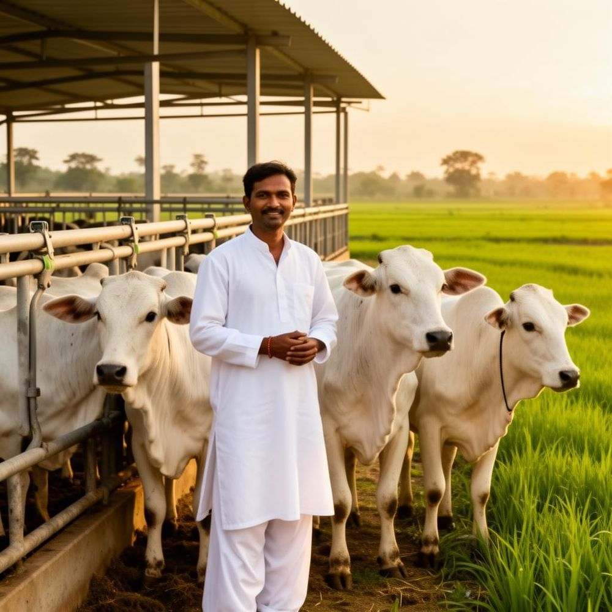
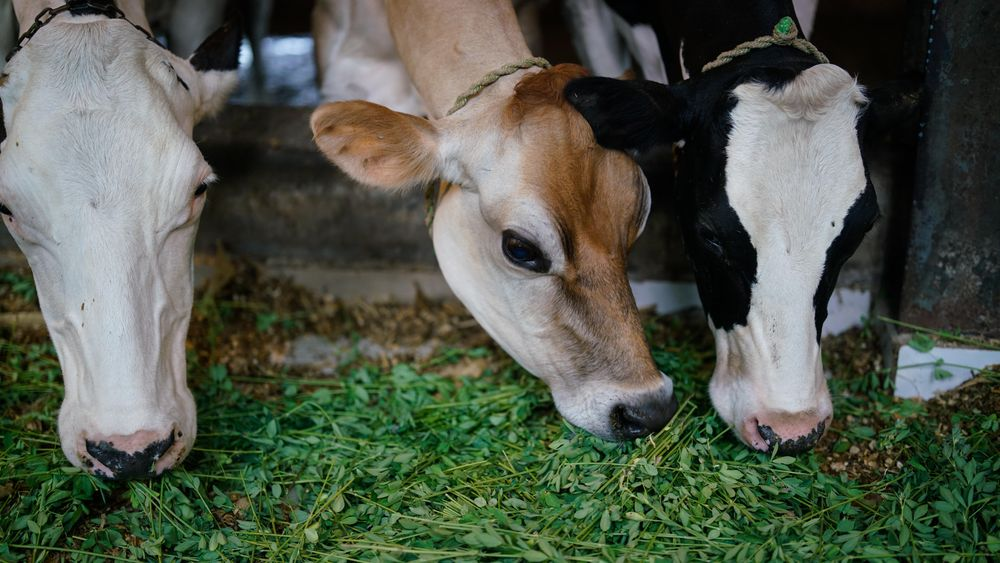
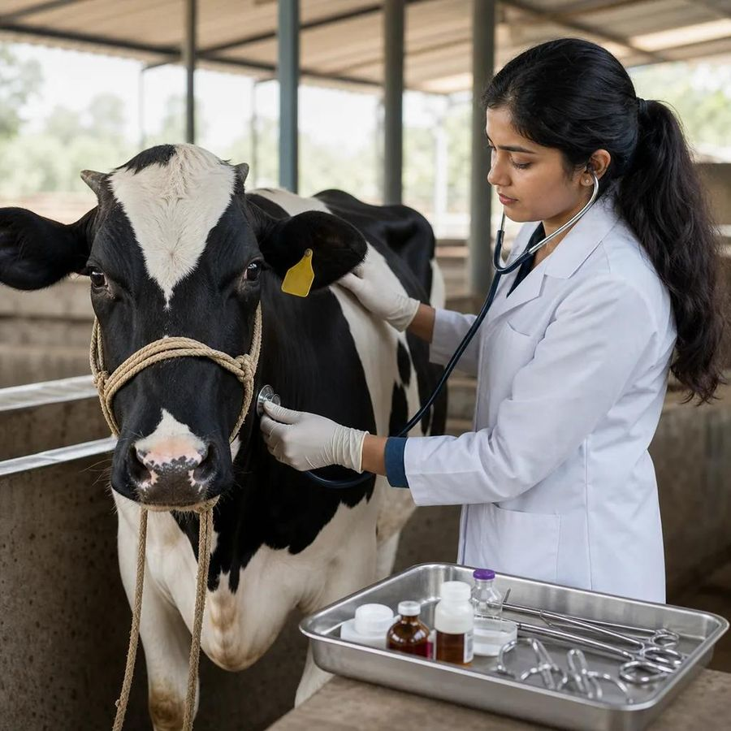
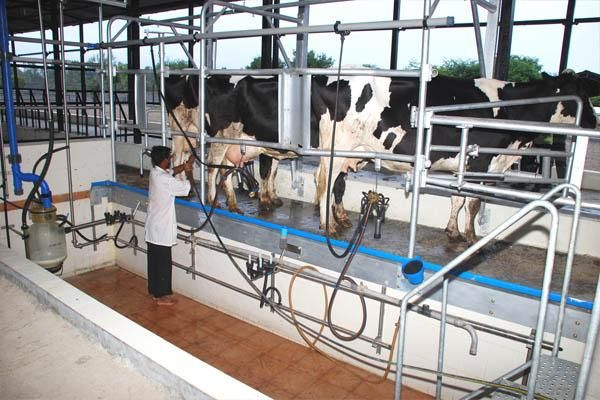
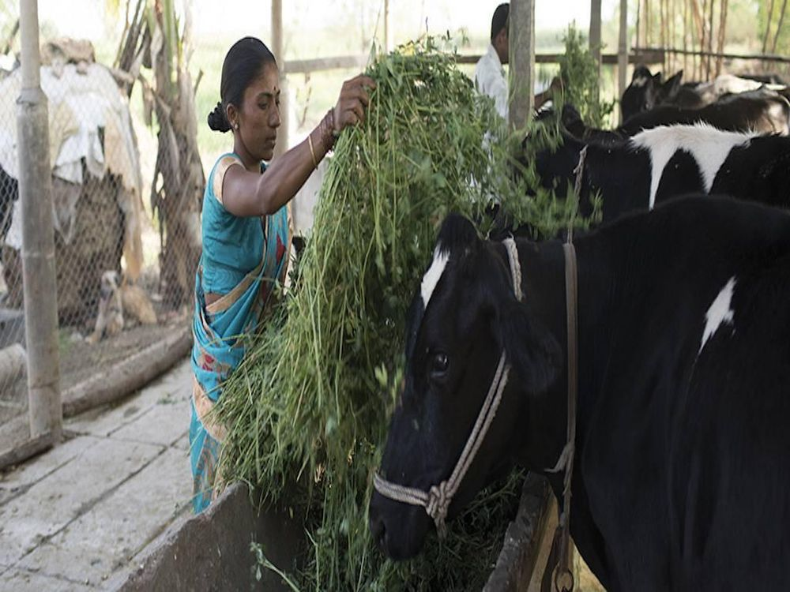

Introduction
About Dairy Farming
Dairy farming plays an important role in rural development by providing farmers with a regular source of income through milk production.
Learn about animal care, feeding practices, milk production and modern dairy management.
- Animal care and health
- Feeding practices
- Milk production and modern dairy management

Benefits
Main Benefits of Dairy Farming
Regular Income
Earn through daily milk production and sales.
Employment
Create employment opportunities in rural areas.
Milk Production
Build a sustainable milk production business.
Business Growth
Explore opportunities in dairy and milk products.
Practical Methods
Modern Dairy Farming Practices

Proper Animal Feeding
Balanced green fodder, dry fodder and feed in the right quantity keep animals healthy and milk yield steady.

Animal Health & Care
Regular veterinary checkups, vaccination and clean sheds protect your animals from disease.

Modern Milking Techniques
Clean, hygienic milking methods and proper milk handling improve milk quality and shelf life.
Dairy Care Checklist
Important Tips
- Provide clean drinking water.
- Maintain hygienic cattle sheds.
- Give nutritious feed and fodder.
- Schedule regular veterinary checkups.
- Maintain proper milk storage.

Start Your Dairy Farming Journey Today
Explore dairy farming guidance, government schemes and the support available to help you start and grow your dairy business.
Explore Government Schemes → Get Farmer Support